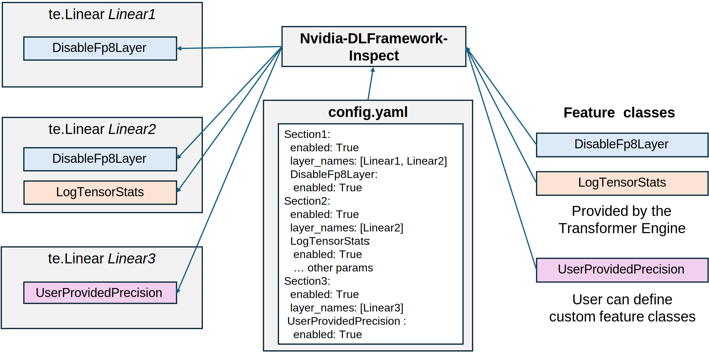
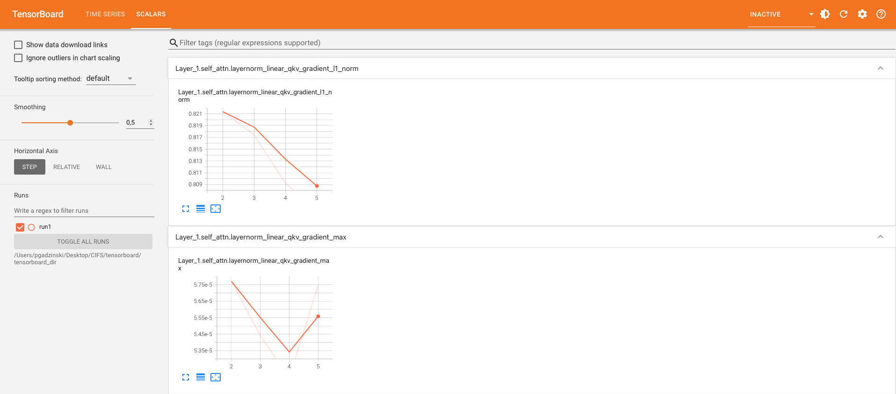

Copyright (c) 2022-2025, NVIDIA CORPORATION & AFFILIATES.
See LICENSE for license information.
快速入门
工具支持范围
目前借助 Nvidia-DL-Framework-Inspect 的 Precision Debug 工具仅支持 Transformer Engine 的 PyTorch 接口。
Transformer Engine 提供了一组精度调试工具，可帮助你：
- 记录每个矩阵乘（GEMM）算子中各张量的统计量；
- 以更高精度运行指定的 GEMM；
- 为特定 GEMM 启用当前的单张量缩放方案；
- 试验新的数值精度并将其集成至 FP8 训练流程；
- ……以及更多能力。
要启用 Transformer Engine 的调试功能，需要完成以下四步：
- 编写配置 YAML 文件，声明要启用的功能。
- 导入、初始化并安装 Nvidia-DL-Framework-Inspect 工具。
- 在创建 TE 层时，可以传入
name="..."便于识别层名；若未指定，将自动推断。 - 在一次前向-反向流程结束时调用
debug_api.step()。
调试的第一步是创建配置 YAML 文件，用于声明各层启用的功能。功能分为两类：
- Transformer Engine 内置功能，例如 DisableFP8GEMM、LogTensorStats，详见 调试功能 API。
- 用户自定义功能。关于如何编写自定义功能，请参考 Nvidia-DL-Framework-Inspect 调用说明。

图 1：Nvidia-DL-Framework-Inspect 对含 3 个 TE Linear 层的训练脚本进行拦截示例。config.yaml 为每个 Linear 层声明要启用的功能。部分功能类由 TE 提供，UserProvidedPrecision 则是用户自定义功能。Nvidia-DL-Framework-Inspect 会按配置将功能注入至对应层。
示例训练脚本
以下展示如何使用 Transformer Engine 以 FP8 精度训练一个 Transformer 层，包括设置层、定义优化器以及使用合成数据运行若干训练迭代。
# train.py
from transformer_engine.pytorch import TransformerLayer
import torch
import torch.nn as nn
import torch.optim as optim
import transformer_engine.pytorch as te
hidden_size = 512
num_attention_heads = 8
transformer_layer = TransformerLayer(
hidden_size=hidden_size,
ffn_hidden_size=hidden_size,
num_attention_heads=num_attention_heads
).cuda()
dummy_input = torch.randn(10, 32, hidden_size).cuda()
criterion = nn.MSELoss()
optimizer = optim.Adam(transformer_layer.parameters(), lr=1e-4)
dummy_target = torch.randn(10, 32, hidden_size).cuda()
for epoch in range(5):
transformer_layer.train()
optimizer.zero_grad()
with te.autocast(enabled=True):
output = transformer_layer(dummy_input)
loss = criterion(output, dummy_target)
loss.backward()
optimizer.step()
我们将在上述脚本中展示两个调试功能：
- 禁用特定 GEMM 的 FP8 精度，例如 FC1、FC2 的前向 GEMM。
- 记录其他 GEMM 的统计量，例如 TransformerLayer 中 LayerNormLinear 子层的数据梯度 GEMM。
配置文件
准备如下配置 YAML 文件：
# config.yaml
fc1_fprop_to_fp8:
enabled: True
layers:
layer_types: [fc1, fc2] # 名称包含 fc1 或 fc2
transformer_engine:
DisableFP8GEMM:
enabled: True
gemms: [fprop]
log_tensor_stats:
enabled: True
layers:
layer_types: [layernorm_linear] # 名称包含 layernorm_linear
transformer_engine:
LogTensorStats:
enabled: True
stats: [max, min, mean, std, l1_norm]
tensors: [activation]
freq: 1
start_step: 2
end_step: 5
关于配置文件的更多说明，请参阅 下一节。
调整 Python 脚本
# (...)
import nvdlfw_inspect.api as debug_api
debug_api.initialize(
config_file="./config.yaml",
feature_dirs=["/path/to/transformer_engine/debug/features"],
log_dir="./log",
default_logging_enabled=True)
# 初始化带名称的 TransformerLayer
transformer_layer = TransformerLayer(
name="transformer_layer",
# ...)
# (...)
for epoch in range(5):
# 前向与反向
# ...
debug_api.step()
上述修改包含以下内容：
- 新增
nvdlfw_inspect.api的导入。 - 通过
debug_api.initialize()初始化 Nvidia-DL-Framework-Inspect，传入配置文件、功能目录与日志目录。其中 Transformer Engine 提供的功能目录位于 此处，完整参数说明见 此文档。 - 在每次前向/反向后调用
debug_api.step()。
查看日志
日志目录下会生成两个文件：
- 调试日志。
- 统计日志。
我们逐一查看。
主日志文件记录了 Transformer 层各个 GEMM 的详细信息。可以看到 fc1 与 fc2 的 fprop GEMM 已按预期运行在高精度模式下。
# log/nvdlfw_inspect_logs/nvdlfw_inspect_globalrank-0.log
INFO - Default logging to file enabled at ./log
INFO - Reading config from ./config.yaml.
INFO - Loaded configs for dict_keys(['fc1_fprop_to_fp8', 'log_tensor_stats']).
INFO - transformer_layer.self_attention.layernorm_qkv: Tensor: activation, gemm fprop - FP8 quantization
INFO - transformer_layer.self_attention.layernorm_qkv: Tensor: activation, gemm wgrad - FP8 quantization
INFO - transformer_layer.self_attention.layernorm_qkv: Tensor: weight, gemm fprop - FP8 quantization
INFO - transformer_layer.self_attention.layernorm_qkv: Tensor: weight, gemm dgrad - FP8 quantization
INFO - transformer_layer.self_attention.layernorm_qkv: Tensor: gradient, gemm dgrad - FP8 quantization
INFO - transformer_layer.self_attention.layernorm_qkv: Tensor: gradient, gemm wgrad - FP8 quantization
INFO - transformer_layer.self_attention.proj: Tensor: activation, gemm fprop - FP8 quantization
INFO - transformer_layer.self_attention.proj: Tensor: activation, gemm wgrad - FP8 quantization
INFO - transformer_layer.self_attention.proj: Tensor: weight, gemm fprop - FP8 quantization
INFO - transformer_layer.self_attention.proj: Tensor: weight, gemm dgrad - FP8 quantization
INFO - transformer_layer.self_attention.proj: Tensor: gradient, gemm dgrad - FP8 quantization
INFO - transformer_layer.self_attention.proj: Tensor: gradient, gemm wgrad - FP8 quantization
INFO - transformer_layer.layernorm_mlp.fc1: Tensor: activation, gemm fprop - High precision
INFO - transformer_layer.layernorm_mlp.fc1: Tensor: activation, gemm wgrad - FP8 quantization
INFO - transformer_layer.layernorm_mlp.fc1: Tensor: weight, gemm fprop - High precision
INFO - transformer_layer.layernorm_mlp.fc1: Tensor: weight, gemm dgrad - FP8 quantization
INFO - transformer_layer.layernorm_mlp.fc1: Tensor: gradient, gemm dgrad - FP8 quantization
INFO - transformer_layer.layernorm_mlp.fc1: Tensor: gradient, gemm wgrad - FP8 quantization
INFO - transformer_layer.layernorm_mlp.fc2: Tensor: activation, gemm fprop - High precision
INFO - transformer_layer.layernorm_mlp.fc2: Tensor: activation, gemm wgrad - FP8 quantization
INFO - transformer_layer.layernorm_mlp.fc2: Tensor: weight, gemm fprop - High precision
INFO - transformer_layer.layernorm_mlp.fc2: Tensor: weight, gemm dgrad - FP8 quantization
INFO - transformer_layer.layernorm_mlp.fc2: Tensor: gradient, gemm dgrad - FP8 quantization
INFO - transformer_layer.layernorm_mlp.fc2: Tensor: gradient, gemm wgrad - FP8 quantization
INFO - transformer_layer.self_attention.layernorm_qkv: Feature=LogTensorStats, API=look_at_tensor_before_process: activation
....
第二个日志文件（nvdlfw_inspect_statistics_logs/nvdlfw_inspect_globalrank-0.log）则记录了我们在 config.yaml 中请求的张量统计。
# log/nvdlfw_inspect_statistics_logs/nvdlfw_inspect_globalrank-0.log
INFO - transformer_layer.self_attention.layernorm_qkv_activation_max iteration=000002 value=4.3188
INFO - transformer_layer.self_attention.layernorm_qkv_activation_min iteration=000002 value=-4.3386
INFO - transformer_layer.self_attention.layernorm_qkv_activation_mean iteration=000002 value=0.0000
INFO - transformer_layer.self_attention.layernorm_qkv_activation_std iteration=000002 value=0.9998
INFO - transformer_layer.self_attention.layernorm_qkv_activation_l1_norm iteration=000002 value=130799.6953
INFO - transformer_layer.self_attention.layernorm_qkv_activation_max iteration=000003 value=4.3184
INFO - transformer_layer.self_attention.layernorm_qkv_activation_min iteration=000003 value=-4.3381
INFO - transformer_layer.self_attention.layernorm_qkv_activation_mean iteration=000003 value=0.0000
INFO - transformer_layer.self_attention.layernorm_qkv_activation_std iteration=000003 value=0.9997
INFO - transformer_layer.self_attention.layernorm_qkv_activation_l1_norm iteration=000003 value=130788.1016
INFO - transformer_layer.self_attention.layernorm_qkv_activation_max iteration=000004 value=4.3181
INFO - transformer_layer.self_attention.layernorm_qkv_activation_min iteration=000004 value=-4.3377
INFO - transformer_layer.self_attention.layernorm_qkv_activation_mean iteration=000004 value=0.0000
INFO - transformer_layer.self_attention.layernorm_qkv_activation_std iteration=000004 value=0.9996
INFO - transformer_layer.self_attention.layernorm_qkv_activation_l1_norm iteration=000004 value=130776.7969
使用 TensorBoard 记录日志
Precision Debug 工具支持使用 TensorBoard 展示统计信息。只需在 debug_api.initialize() 中传入 tb_writer。以下对 train.py 做出修改：
# (...)
from torch.utils.tensorboard import SummaryWriter
tb_writer = SummaryWriter('./tensorboard_dir/run1')
# 在 Debug API 初始化时传入 tb_writer
debug_api.initialize(
config_file="./config.yaml",
feature_dirs=["/path/to/transformer_engine/debug/features"],
log_dir="./log",
tb_writer=tb_writer)
# (...)
运行训练脚本后，通过 tensorboard --logdir=./tensorboard_dir/run1 打开 TensorBoard：

图 2：使用 TensorBoard 绘制的统计信息。